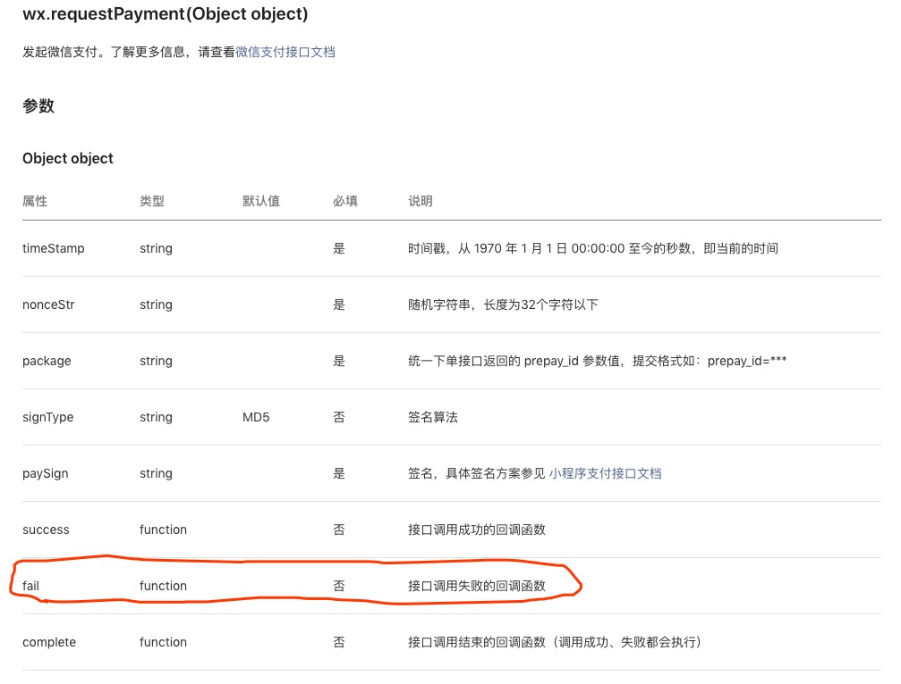

近日看到一篇文章99%的程序都没有考虑的网络异常，开篇提到：
绝大多数程序只考虑了接口正常工作的场景，而用户在使用我们的产品时遇到的各类异常，全都丢在看似 ok 的 try catch 中。如果没有做好异常的兼容和兜底处理，会极大的影响用户体验，严重的还会带来安全和资损风险。
于是，笔者分析了 GitHub 上的一些开源微信小程序，发现大多数的代码异常处理确实是不够的。
//调用登录接口
wx.login({
success: function() {
wx.getUserInfo({
success: function(res) {
that.globalData.userInfo = res.userInfo;
typeof cb == "function" && cb(that.globalData.userInfo);
}
});
}
});网络请求只考虑then不考虑catch
util.getData(index_api).then(function(data) {
//this.setData({
//
//});
console.log(data);
});考虑了异常情况但是没有做妥善的处理
db.collection("config")
.where({})
.get()
.then(res => {
console.log(res);
if (res.data.length > 0) {
Taro.setStorage({
key: "config_gitter",
data: res.data[0]
});
}
})
.catch(err => {
console.error(err);
});也许 99%的情况下接口都是正常返回的，只有 1%的情况会失败。看起来好像不是一件严重的事情，但是考虑到用户的量级，这个事情就不那么简单了。假设有 100 万用户，那么就有 1 万用户遇到异常情况，而且如果用户的使用频次很高，影响的何止 1 万用户。并且，如今产品都是体验至上，如果遇到这样的问题，用户极大可能就弃你而去，流失了客户就等于流失了收入。
如何妥善地处理接口异常的情况是一件严肃的事情，应当被重视起来。
那么，应当如何做呢？首先要定义请求异常的处理代码，比如微信开放接口的参数中有fail（“接口调用失败的回调函数”）、Promise 的catch部分；其次，根据异常可能导致的后果，在函数中做相应的处理。如果会导致后续操作失败、或则界面无反馈，那么应当在 fail 回调中正确处理；如果你真的认为基本不可能出问题，那么至少写个异常上报。即使出错了，也知道具体的情况。
下图是微信支付接口的参数列表，其中包含了接口调用失败的回调函数(fail)。

而且官方也给出了示例：
wx.requestPayment({
timeStamp: "",
nonceStr: "",
package: "",
signType: "MD5",
paySign: "",
success(res) {},
fail(res) {}
});fail中上报异常为了确保完全掌握小程序的运行状况，我们将异常上报。Fundebug 的微信小程序插件除了可以自动捕获异常外，还支持通过API 接口主动上报异常。
根据其官方文档：
使用 fundebug.notify()，可以将自定义的错误信息发送到 Fundebug
name: 错误名称，参数类型为字符串
message: 错误信息，参数类型为字符串
option: 可选对象，参数类型为对象，用于发送一些额外信息
示例：
fundebug.notify("Test", "Hello, Fundebug!", { metaData: { company: "云麒", location: "厦门" } });
首先在 Fundebug 创建一个小程序监控项目，并按照指示接入插件，然后在app.js的onLaunch函数下面调用wx.requestPayment来进行测试。
Fundebug 的微信小程序插件捕获并上报了异常：
在metaData标签还可以看到我们配置的 metaData，也就是fail回调函数的res参数。
因此，我们可以知道失败的原因是订单过期。
另外，如果在二维码页面停留时间过久，也会触发报错：
通过简单的加入几行代码，就可以将小程序的异常情况了如指掌。而且 Fundebug 的微信小程序插件还可以监控线上 JavaScript 执行异常、自动捕获wx.request请求错误、监控慢 HTTP 请求，推荐大家接入试用！
Fundebug专注于JavaScript、微信小程序、微信小游戏、支付宝小程序、React Native、Node.js和Java线上应用实时BUG监控。 自从2016年双十一正式上线，Fundebug累计处理了10亿+错误事件，付费客户有阳光保险、核桃编程、荔枝FM、掌门1对1、微脉、青团社等众多品牌企业。欢迎大家免费试用！
转载时请注明作者 Fundebug以及本文地址：
https://blog.fundebug.com/2019/07/08/report-http-error-by-fundebug-notify/